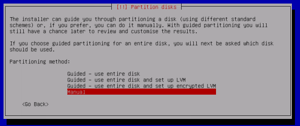
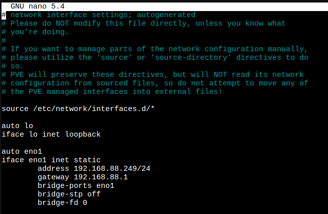
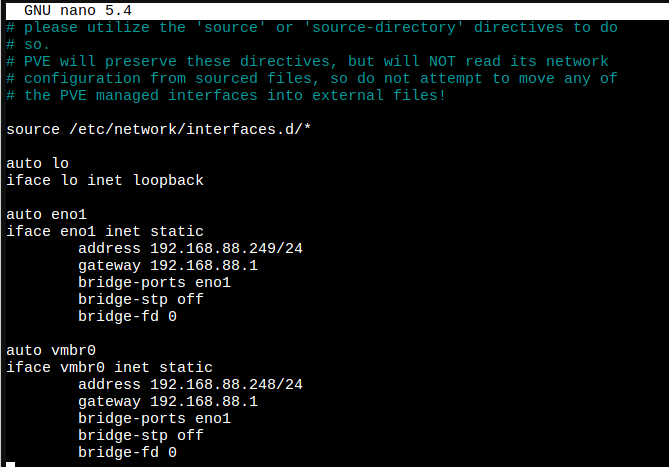
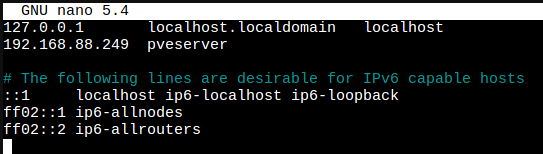

Although Proxmox VE is a Debian-based Linux distribution, its installer doesn’t offer us the possibility of setting up an encrypted LVM. To install proxmox over an encrypted drive we need to install Debian 11 first, change the network configuration, and then install the proxmox packages.
Installing Debian 11 (Bullseye)
Download Debian from the official website https://www.debian.org/download, along with the SHA512SUMS and the Signature.
Generate a checksum for the ISO file and save it:
sha512sum debian-11.7.0-amd64-netinst.iso >> debianHash.txtVerify the integrity of the ISO file by comparing the checksums using diff:
diff SHA512SUM.txt debianHash.txtIf the checksums are equal no output will be displayed. If the files differ, you will see this message prompted:
Files SHA512SUM.txt and debianHash differ
If the checksum value you calculated is even slightly different from the checksum value of the original file, that means that the file was corrupted or tampered with by a third party, such as in the case of malware.
To verify the authenticity of the SHA512SUM.txt file we need the signing key.
Import the signing key
gpg --keyserver keyring.debian.org --recv-keys <input the key id here>You can get the key id from https://www.debian.org/CD/verify
Now you can verify the checksum:
gpg --verify SHA512SUMS.sign SHA512SUMS.txt The output will look like this:
gpg: Signature made Sat 29 Apr 2023 05:48:07 PM -03
gpg: using RSA key DF9B9C49EAA9298432589D76DA87E80D6294BE9B
gpg: Good signature from "Debian CD signing key <debian-cd@lists.debian.org>" [unknown]
gpg: WARNING: This key is not certified with a trusted signature!
gpg: There is no indication that the signature belongs to the owner.
Primary key fingerprint: DF9B 9C49 EAA9 2984 3258 9D76 DA87 E80D 6294 BE9B
The output of the last command should tell you that the file signature is good. GPG might warn you that the Debian signature is not trusted by your computer. This is expected and perfectly normal.
Making a bootable USB drive
Insert your USB stick and run the lsblk command to list all the available block devices.
lsblksda 8:0 0 232.9G 0 disk
├─sda1 8:1 0 512M 0 part /boot/efi
├─sda2 8:2 0 732M 0 part /boot
└─sda3 8:3 0 231.7G 0 part
└─sda3_crypt 254:0 0 231.7G 0 crypt
└─parrot--vg-root 254:1 0 231.6G 0 lvm
sdb 8:16 0 223.6G 0 disk
sdd 8:80 1 14.4G 0 disk
└─sdd1 8:81 1 14.4G 0 part
Use the dd command to create a bootable USB image from the ISO file:
sudo dd if=debian-11.7.0-amd64-netinst.iso of=/dev/sdd bs=1M status=progressif=debian-11.7.0-amd64-netinst.iso: Path to input file.
of=/dev/sdd: Path to destination USB disk/stick.
bs=1M: sets the blocksize, for example, bs=1M would be 1MiB blocksize.
status=progress: Display the progress bar while writing the image to the USB stick such as /dev/sdd.
You can use the guided install to set up an encrypted LVM

It is recommended to only install the “standard system utilities” and “SSH server” package selection, as Proxmox VE brings its own packages for QEMU and LXC.
Configure Networking
To use proxmox, we must set a static ip and the hostname must be mapped to the IP address in the host file.
Set the static IP address by changing “dhcp” to “static” in /etc/network/interfaces and add the IP address, netmask, and gateway for the server.
nano /etc/network/interfaces
A vmbr interface is needed to connect guests to the underlying physical network. They are a Linux bridge that can be thought of as a virtual switch to which the guests and physical interfaces are connected to.
Create a Linux Bridge called vmbr0, and add your first network interface to it. If you have trouble configuring the Bridge, you can use the GUI to do so once proxmox packages are installed.

The hostname of your machine must be resolvable via /etc/hosts. This means that in /etc/hosts you need one of the following entries for your hostname:
1 IPv4 or
1 IPv6 or
1 IPv4 and 1 IPv6
For instance, if your IP address is 192.168.88.249, and your hostname pveserver, then your /etc/hosts file could look like this:

Reload the network configuration by rebooting the network interface:
ifdown eno1
ifup eno1Verify that your ip address is the one you chose:
ip aInstall Proxmox VE
Add the Proxmox VE repository:
echo "deb [arch=amd64] http://download.proxmox.com/debian/pve bullseye pve-no-subscription" > /etc/apt/sources.list.d/pve-install-repo.listAdd the Proxmox VE repository key as root (or use sudo):
wget https://download.proxmox.com/debian/proxmox-release-bullseye.gpg -O /etc/apt/trusted.gpg.d/proxmox-release-bullseye.gpg Verify:
sha512sum /etc/apt/trusted.gpg.d/proxmox-release-bullseye.gpg Update your repository and system by running:
apt update && apt full-upgradeInstall the Proxmox VE packages:
apt install proxmox-ve postfix open-iscsiConfigure packages that require user input on installation according to your needs.
Remove the os-prober Package:
The os-prober package scans all the partitions of your host to create dual-boot GRUB entries. But the scanned partitions can also include those assigned to virtual machines, which one doesn’t want to add as boot entry. If you didn’t install Proxmox VE as dual boot beside another OS, you can safely remove the os-prober package:
apt remove os-proberAnd now you have an encrypted proxmox server. If you use external storage with your proxmox server, you may also be interested in encrypting it to ensure the confidentiality and integrity of your data.